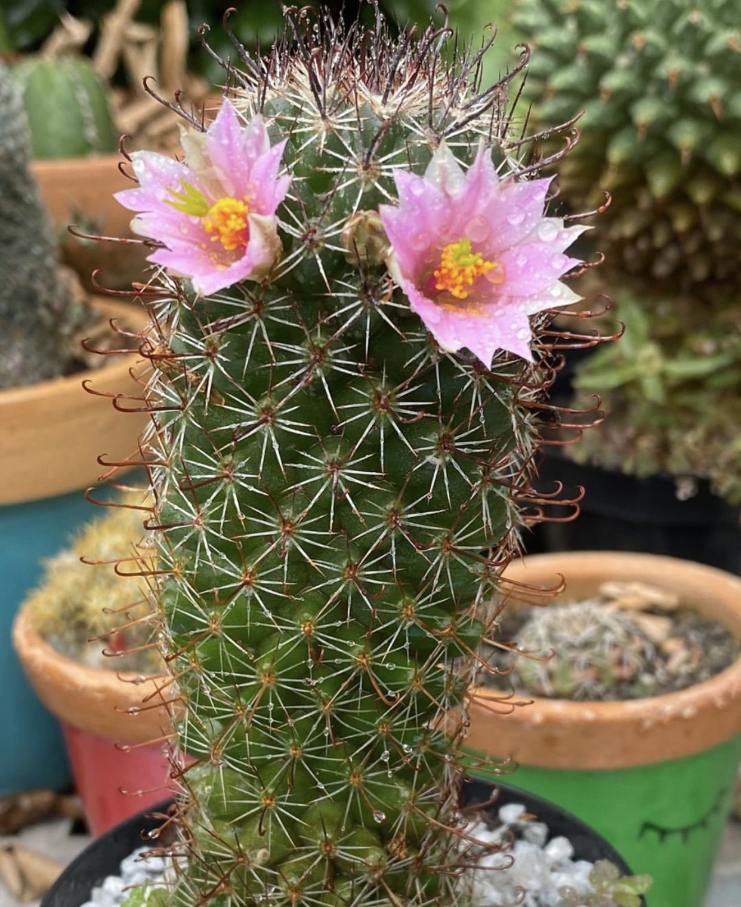

Cacto
Os cactos são plantas suculentas que pertencem à família Cactaceae, sendo conhecidos por sua capacidade de armazenar água em seus tecidos, o que lhes permite sobreviver em ambientes áridos e desertos. Eles apresentam uma variedade impressionante de formas e tamanhos, desde pequenos cactos em miniatura até grandes cactos colunares que podem atingir várias metros de altura.
Uma das características mais distintivas dos cactos é a presença de espinhos, que são adaptações de folhas transformadas. Esses espinhos ajudam a reduzir a perda de água, protegendo a planta de herbívoros e refletindo a luz solar intensa. A superfície dos cactos pode ser verde, cinza ou até mesmo colorida, dependendo da espécie, e muitos cactos apresentam flores vibrantes e coloridas que surgem em diferentes épocas do ano.
Nativos principalmente das Américas, os cactos são encontrados em uma variedade de habitats, desde desertos até florestas tropicais. Eles são populares como plantas de interior e em paisagismos xerófitos devido à sua resistência e baixa necessidade de água. Além disso, algumas espécies de cactos produzem frutos comestíveis, como o figo-da-índia (Opuntia), que é amplamente consumido em diversas culturas. A beleza exótica e a adaptabilidade dos cactos fazem deles uma escolha popular para jardinagem e decoração.